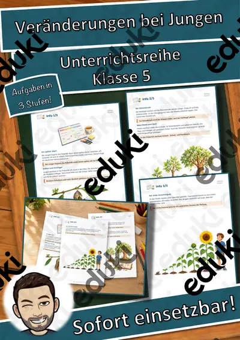

Lesespur: Die Töpferei – Lesespurgeschichte mit Rätseln (Klasse 4)
Begib dich mit deiner Klasse auf eine spannende Lesespur durch eine alte Töpferwerkstatt! Die Kinder begleiten Lena und Jonas und den jungen Töpferjungen Ben Schritt für Schritt auf dem Weg vom weichen Ton bis zum fertigen Krug – vom Tonlager über die Töpferscheibe, den Formtisch, das Trockenregal, den Bemaltisch, das Glasurbecken und den Brennofen bis zum Ausstellungsregal und zum Verkaufstresen. Am Ende jedes Abschnitts verrät ein Hinweis den nächsten Ort auf dem Übersichtsplan – nur wer richtig liest und mitdenkt, findet den Weg und sammelt alle geheimen Buchstaben zum Lösungswort.
Diese Lesespurgeschichte verbindet motivierendes, sinnentnehmendes Lesen mit echtem Sachwissen rund um das alte Handwerk des Töpferns und den Weg vom Ton zum Gefäß und schult zugleich das genaue Arbeiten. Das Material ist SOFORT EINSETZBAR und in DREI DIFFERENZIERUNGSSTUFEN (leicht ★ / mittel ★★ / schwer ★★★) angelegt, sodass alle Kinder einer Klasse am selben Thema arbeiten können.WICHTIG: Das komplette Material ist sowohl in FARBE als auch in SCHWARZ-WEISS enthalten – ideal zum Sparen von Druckkosten.DAS IST ENTHALTEN
- Lesespurgeschichte in 3 Niveaus (leicht, mittel, schwer)
- farbiger Übersichtsplan als Suchkarte
- Hörverstehen mit QR-Code zur MP3 (Kinder hören selbstständig mit Kopfhörern)
- vier Aufträge auf dem Weg: ein Verbinde-Rätsel, ein Sach-Quiz, eine Rechenaufgabe und ein Steckbrief
- Rätselseite (Wörter-Suchsel + Wissensfragen)
- Ausmalbild zum Thema (Töpferscheibe mit Steinkrug)
- ausführliches Lösungsblatt für die Lehrkraft
- alles zusätzlich als komplette Schwarz-Weiß-VarianteSO FUNKTIONIERT DIE LESESPURDie Kinder lesen ab START, entnehmen dem Text einen Hinweis auf einen Ort, suchen ihn auf dem Plan und lesen beim dort abgebildeten Buchstaben weiter. Eingebaute Sackgassen dienen der Selbstkontrolle. Am Ende werden die gesammelten Buchstaben umgestellt und ergeben ein geheimes Lösungswort. (Die Lösungen sind selbstverständlich nur im Lösungsblatt für die Lehrkraft enthalten.)INHALTLICHER SCHWERPUNKTDer Weg vom Ton zum Krug in einer Töpferwerkstatt: das Tonlager, das Formen auf der Töpferscheibe und mit den Händen, das Trocknen, das Bemalen und Glasieren, das Brennen im Brennofen sowie das Ausstellen und Verkaufen. Kindgerecht und sachlich richtig dargestellt.ABGEDECKTER LEHRPLAN (Grundschule, Sachunterricht/HSU)
- Sachunterricht / HSU – Arbeit, Handwerk und Technik: das alte Handwerk des Töpferns kennenlernen, den Weg vom Ton zum gebrannten Gefäß verstehen, den Werkstoff Ton und die Veränderung von Material durch das Brennen einordnen.
- Deutsch – Lesen: Lesestrategien anwenden, Texten gezielt Informationen entnehmen, sinnentnehmend und selektiv lesen, Schlüsselwörter nutzen; Selbstkontrolle und Lesemotivation durch die Lesespur; Zuhören: einem Sachhörtext konzentriert folgen und Wesentliches entnehmen (Hörverstehen mit MP3).
- Mathematik – einfache Sachaufgaben im Zahlenraum bis 100 (Addition und Subtraktion) rund um die Werkstatt.
- Fächerübergreifend / Kompetenzen: selbstständiges Arbeiten, genaues Lesen und Prüfen, Konzentration und Ausdauer, kreatives Gestalten (Ausmalbild).
Geeignet für Freiarbeit, Stationenlernen, Vertretungsstunden, Wochenplan und Homeschooling. Grundschule (differenziert einsetzbar in mehreren Jahrgangsstufen).
Ähnliche Materialien

Töpferei – Hörverstehen mit Lückentext (interaktiv)

Töpferei Lückentext mit Wortspeicher Hörverstehen und Suchsel

Lesespur: Die lange Kulturnacht: was macht Kultur wertvoll? – Lesespurgeschichte mit Rätseln (Klasse 3)

Lesespur: Das Handwerk und die Zünfte – Lesespurgeschichte mit Rätseln (Klasse 7)

Deckungsbeitrag: die Gewinnschwelle – Arbeitsheft mit Lösungen (BwR 10, Realschule Bayern)

Geschäftsfälle und Bilanz – Arbeitsheft mit Lösungen (BwR 7, Realschule Bayern)

Keramik Lückentext mit Wortspeicher Hörverstehen und Suchsel
